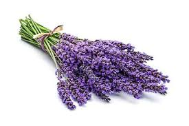

Birch
Both the leaves and branches can be used to treat sprains, strained muscles and headaches, and steaming the leaves can help clear sinus congestion. In the early spring, the buds of the birch can be infused in oil to make a topical salve for inflamed skin. Birch trees can also be tapped for their sap to make syrup. Birch buds have long been known to have healing properties. They treat diseases of the stomach and duodenum, and relieve inflammatory processes in the lungs and liver. Birch buds improve appetite. And birch water is also a source of Vitamin C, an antioxidant that stimulates collagen production and protects the body from UV rays. Sailors historically drank birch water to ward off scurvy, a Vitamin C deficiency that causes weakness, bleeding from the skin and gum disease.
In the spring picking new birch leaves for tea is easy as they are not hard to pick and dry. Birch leaves are said to be healing and good for general detox, arthritis and psoriases. Find whole birch leaves, spring or early summer, that have not been eaten by bugs. Pick them in a basket of some kind.
Lavander
Lavender may help improve sleep, treat skin blemishes, relieve pain, reduce blood pressure, lessen menopausal hot flashes, combat fungus growth, and potentially promote hair growth. Aromatherapists use lavender in inhalation therapy to treat headaches, nervous disorders, and exhaustion. Herbalists treat skin ailments, such as fungal infections (like candidiasis), wounds, eczema, and acne, with lavender oil. It is also used in a healing bath for joint and muscle pain.
Lavender is a Mediterranean plant (in needs if not always in geographic origin) and needs lots of sun and fast-draining soil. It will not survive long in shady, damp or extremely cold conditions. It prefers poor, dry or moderately fertile soil, including chalky and alkaline soils.To harvest lavender for tea, pick the flowers before they fully open. When you want to make a fresh bouquet of lavender, harvest the stems when about half the blooms are open—additional buds will bloom after the stems are cut. To harvest lavender for essential oil, wait until most of the blossoms have opened
Peppermint

Peppermint, a popular flavoring for gum, toothpaste, and tea, is also used to soothe an upset stomach or to aid digestion. It has a calming and numbing effect, and is often used to treat headaches, skin irritation, nausea, diarrhea, menstrual cramps, flatulence, and anxiety associated with depression. Peppermint tea is rich in antioxidants, there are lots of other benefits of peppermint tea too - ability to calm anxiety and relieve digestive discomfort, both of which can make it much easier to fall asleep as well. Enjoy a cup of peppermint tea about an hour before bed to soothe yourself into sleep.
Peppermint thrives in most soil types, in sun or light shade, and usually forms large leafy clumps up to 1m (3.3ft) tall and wide. Most mints are vigorous, spreading plants, so are best grown in large pots or in bottomless buckets sunk into the ground, to keep their roots contained.The best time to harvest mint leaves is right before flowers appear, usually midway through the growing season. However, you can start collecting individual leaves as soon as the plants reach at least 4 inches in height. For fresh use, pick green leaves from the plant as required.
Ginger

It's known for adding flavor to cooking recipes, but it also offers several health benefits. Numerous studies have found that ginger can help improve blood sugar levels, reduce inflammation, relieve pain, strengthen the immune system, and treat nausea and indigestion. Brewing a cup of hot ginger tea is also effective when you are suffering from fever. To make the tea, add half-teaspoon minced ginger root in 1 cup of boiled water. Strain it and then drink. Ginger has been shown to be a safe, natural, and effective way of reducing nausea for many people. Before using ginger for medicinal purposes however, talk to your doctor. Common side effects of ginger may include: Mild heartburn. A cup of ginger tea can help to increase concentration and focus and increase energy. While ginger has been used to boost brainpower in herbal medicine for hundreds of years, recent studies have shown that ginger's cognitive benefits are backed by scientific evidence.
Turmeric

Both animal and human studies have found that curcumin (turmeric is a plant and it's the roots of the plant that are used to make the spice that is used in cooking and herbal drinks. Curcumin is the naturally occurring compound within the plant's roots that give it it's bright yellow colour and is known as a carotenoid compound. It is also a very strong antioxidant.) may increase brain levels of BDNF. By doing this, it may be effective in delaying or even reversing many brain diseases and age-related decreases in brain function. It may also help improve memory and attention, which seems logical given its effects on BDNF levels. It contains an active compound, curcumin, that has antioxidant and anti-inflammatory properties. Research has found that curcumin has the potential to improve a number of health conditions — including depression. This includes mild depression and even major depressive disorder (MDD). Today, turmeric is promoted as a dietary supplement for a variety of conditions, including arthritis, digestive disorders, respiratory infections, allergies, liver disease, and many others.
With the unpredictable nature of UK weather, we recommend growing turmeric root indoors as it will not survive if temperatures drop below 10°C. If you're planting them inside, then they won't need any light until you start seeing some sprouts, so don't worry about natural light for the first few months.
Camomile

Benefits of chamomile include improved sleep, reduced anxiety, relief from stomach ailments, and treatment of skin conditions. Drinking chamomile tea regularly may help maintain healthy blood pressure levels more indirectly as it helps to reduce stress, promote sleep, and relax blood vessels and arteries. Although chamomile tea potentially benefits heart health in many ways, it may increase the risk of bleeding for people on blood thinners. Today, chamomile is promoted for sleeplessness, anxiety, and gastrointestinal conditions such as upset stomach, gas, and diarrhea (strong camomile tea will harden the stool, while weak will make it looser, for example in case of constipation). It is also used topically for skin conditions and for mouth sores resulting from cancer treatment. Speaking of skin conditions – it's also great for rashes or cuts, since its antibacterial. Also can use it as wash for eyes for conjunctivitis – make a tea, wait until it cools down, then with cotton pad clean the eye inwards couple times a day – within couple days should see improvement.
The harvest time and the flowering time for chamomile overlap − these are between June and September. It is not only the flowering that determines when you should harvest chamomile, the time of day and the weather also play a role. Chamomile flowers are best harvested around midday on a sunny day.